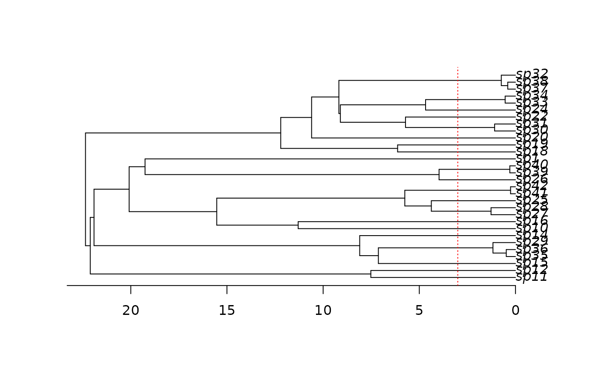

make.musse.td.RdCreate a likelihood function for a MuSSE model where different chunks of time have different parameters. This code is experimental!
An ultrametric bifurcating phylogenetic tree, in
ape “phylo” format.
A vector of character states, each of which must be an
integer between 1 and k. This vector must have names that
correspond to the tip labels in the phylogenetic tree
(tree$tip.label). For tips corresponding to unresolved
clades, the state should be NA.
The number of states.
Number of epochs. 1 corresponds to plain MuSSE, so this will generally be an integer at least 2.
A named list of functions of time. See details.
Vector of length k where sampling.f[i]
is the proportion of species in state i that are present in
the phylogeny. A value of c(0.5, 0.75, 1) means that half of
species in state 1, three quarters of species in state 2, and all
species in state 3 are included in the phylogeny. By default all
species are assumed to be known
The states vector is always checked to make sure
that the values are integers on 1:k. If strict is
TRUE (the default), then the additional check is made that
every state is present. The likelihood models tend to be
poorly behaved where states are missing, but there are cases
(missing intermediate states for meristic characters) where allowing
such models may be useful.
List of control parameters for the ODE solver. See
details in make.bisse.
Logical, indicating if functions should be truncated to zero when negative (rather than causing an error). May be scalar (applying to all functions) or a vector (of same length as the functions vector).
List of data for spline-based time functions. See details
.
Please see make.bisse.t for further details.
## Here we will start with the tree and three-state character set from
## the make.musse example. This is a poorly contrived example.
pars <- c(.1, .15, .2, # lambda 1, 2, 3
.03, .045, .06, # mu 1, 2, 3
.05, 0, # q12, q13
.05, .05, # q21, q23
0, .05) # q31, q32
set.seed(2)
phy <- tree.musse(pars, 30, x0=1)
## Suppose we want to see if diversification is different in the most
## recent 3 time units, compared with the rest of the tree (yes, this is
## a totally contrived example!):
plot(phy)
axisPhylo()
abline(v=max(branching.times(phy)) - 3, col="red", lty=3)

## For comparison, make a plain MuSSE likelihood function
lik.m <- make.musse(phy, phy$tip.state, 3)
## Create the time-dependent likelihood function. The final argument
## here is the number of 'epochs' that are allowed. Two epochs is one
## switch point.
lik.t <- make.musse.td(phy, phy$tip.state, 3, 2)
## The switch point is the first argument. The remaining 12 parameters
## are the MuSSE parameters, with the first 6 being the most recent
## epoch.
argnames(lik.t)
#> [1] "t.1" "lambda1.1" "lambda2.1" "lambda3.1" "mu1.1" "mu2.1"
#> [7] "mu3.1" "q12.1" "q13.1" "q21.1" "q23.1" "q31.1"
#> [13] "q32.1" "lambda1.2" "lambda2.2" "lambda3.2" "mu1.2" "mu2.2"
#> [19] "mu3.2" "q12.2" "q13.2" "q21.2" "q23.2" "q31.2"
#> [25] "q32.2"
pars.t <- c(3, pars, pars)
names(pars.t) <- argnames(lik.t)
## Calculations are identical to a reasonable tolerance:
lik.m(pars) - lik.t(pars.t)
#> [1] 2.505392e-08
## It will often be useful to constrain the time as a fixed quantity.
lik.t2 <- constrain(lik.t, t.1 ~ 3)
## Parameter estimation under maximum likelihood. This is marked "don't
## run" because the time-dependent fit takes a few minutes.
if (FALSE) { # \dontrun{
## Fit the MuSSE ML model
fit.m <- find.mle(lik.m, pars)
## And fit the MuSSE/td model
fit.t <- find.mle(lik.t2, pars.t[argnames(lik.t2)],
control=list(maxit=20000))
## Compare these two fits with a likelihood ratio test (lik.t2 is nested
## within lik.m)
anova(fit.m, td=fit.t)
} # }